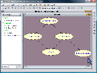

SamIam supports several techniques for selecting a subset of the nodes in the network. You can select a single node by single-clicking the mouse over its icon in the network view or in the evidence tree. You can also drag a selection rectangle across the network view by holding down the left mouse button. Additionally, double-clicking a node will bring up its Properties dialog. To deselect all nodes, click the background of the network view. To select a sequence of nodes you can hold down the SHIFT key, which enables additive selection semantics, and then proceed to select a set of nodes through the aforementioned techniques. Holding down the CTRL key enables XOR semantics.
|  |